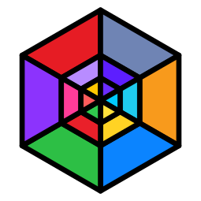

@aura.heal
A failing routine is captured, diagnosed, and retried automatically.

V1.1.0 / AURA CORE ECOSYSTEM
God AI blends a terminal-first CLI, a typed Python SDK, and a web dashboard into one resilient workflow runner for local and cloud LLMs.
PROVIDERS
PLAYGROUND
A failing routine is captured, diagnosed, and retried automatically.
Unstructured text becomes structured JSON and validated Pydantic output.
PROJECTS
API
aura.configure(...)
Set provider, key, model, endpoint, request timeout, and local fallback behavior.
@aura.heal
Capture failing function state, request a root-cause diagnosis, and retry once or more.
aura.trace_exceptions
Wrap functions and emit runtime diagnostics with structured traceback context.
aura.do(...)
Generate and execute guarded Python in a restricted sandbox with AST validation.
aura.parse(...)
Turn unstructured text into valid JSON or a typed Pydantic object.
@aura.optimize
Profile function execution and log optimization suggestions without changing behavior.
aura.agent(...)
Run a bounded test-and-fix loop with optional diff-based patching.
god --web
Launch the local web dashboard or execute prompts in a confirmation-gated shell workflow.